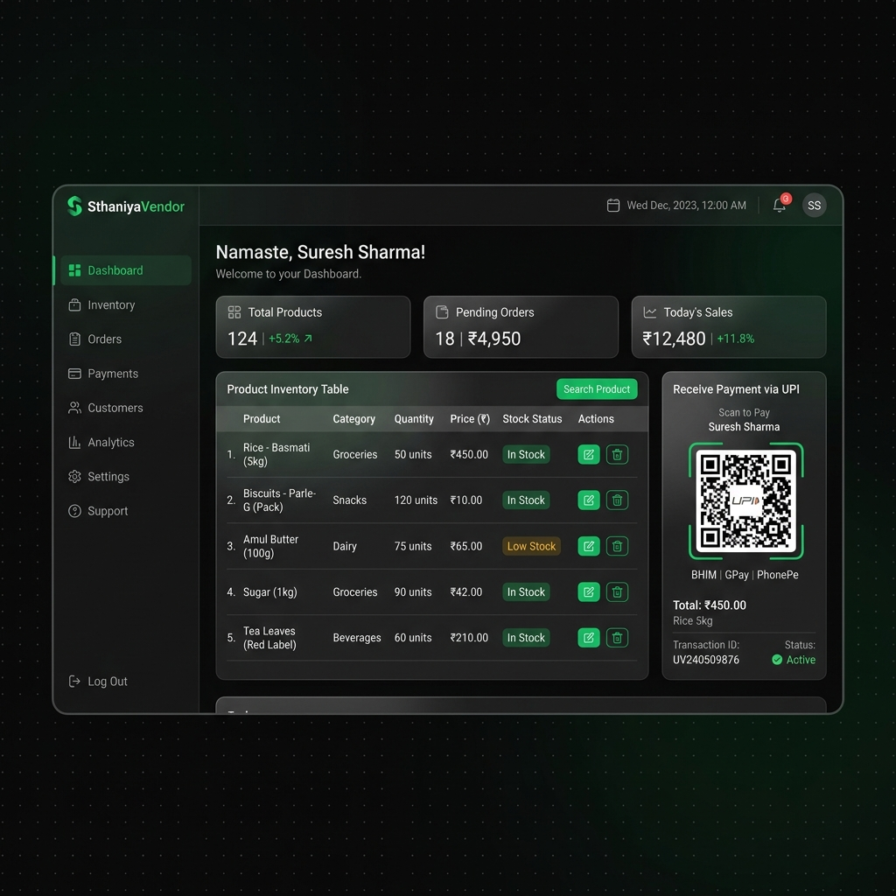

Case Study
A hyperlocal vendor portal that helps local kirana stores and street merchants digitize their entire business — featuring AI voice + image inventory, UPI QR billing, barcode scanning, and an offline-first buyer discovery mobile app.

SthaniyaVendor vendor dashboard — inventory, UPI QR billing, and AI-powered product entry
01 — Problem
India's kirana stores, vegetable vendors, dairy booths, and street merchants are losing ground to quick-commerce platforms that have proprietary digital infrastructure. Despite serving millions of customers daily, local merchants have no affordable way to digitize.
Existing POS/billing systems are designed for large retailers, requiring high technical literacy that micro-merchants don't have.
Traditional billing software requires upfront PC purchases, barcode guns, and licensing costs — unaffordable for small vendors.
Traditional portals need complex email registrations, business documents, or bank approvals before a vendor can start selling.
Most digital tools are English-only, making them inaccessible to elderly shop owners who speak Hindi, Gujarati, or regional dialects.
02 — Solution
SthaniyaVendor provides a completely free, mobile-first, friction-free portal requiring zero technical training. Vendors sign up with their phone number, and their entire business is digitized in minutes.
The platform is split into two halves: a vendor web dashboard (React + Vite) for shop management and billing, and a buyer discovery mobile app (React Native + Expo) that lets customers find local shops and products on an interactive map.
03 — Features
Vendors speak naturally in mixed Hindi-English — "Ek kilo chawal 50 rupay" — and Gemini AI parses it into structured database records: Product, Quantity, Price.
MobileNet model runs entirely in the browser. Point the camera at any product and the category auto-fills — zero cloud GPU costs, infinite scalability.
Auto-generates secure scan-to-pay UPI QR codes bound to the vendor's bank VPA. Compatible with GPay, PhonePe, Paytm. Cart items + total calculated instantly.
After payment, vendor taps once to send a beautifully formatted HTML receipt to the customer's WhatsApp — paperless, instant, professional.
Uses the device camera to scan product barcodes and auto-pull product codes, dramatically accelerating inventory creation for packaged goods.
React Native + Expo mobile app shows nearby vendors as category-coded map pins. Buyers can search for specific products and get real-time directions — works offline too.
04 — Tech Stack
| Category | Technology | Why This Choice |
|---|---|---|
| AI / NLP | Gemini AI API | Handles Hinglish mixed-language voice parsing — converts unstructured speech to structured DB inserts |
| Image AI | TensorFlow.js (MobileNet) | Edge inference in-browser means ₹0 cloud GPU cost; works offline and scales infinitely |
| Database | PostgreSQL + SQLAlchemy | Strict relational schema ensures inventory integrity; ACID compliance for billing transactions |
| Auth | PyJWT + Phone Auth | Phone-first flow removes the biggest onboarding friction — no email, no documents needed |
| QR Payments | Client-side SVG QR Gen | Generated in-browser, not server-side — eliminates bandwidth cost and works without connectivity |
| Mobile | React Native + Expo | Single codebase for iOS + Android; Expo Camera enables barcode scan without native modules |
05 — Challenges & Learnings
Vendors mix Hindi, English, and transliterated terms arbitrarily — "5 packet biscuit teen sau mein". Standard NLP models trained on clean English failed entirely.
Many kirana store owners use entry-level Android devices with 2GB RAM. Loading the full MobileNet model (4MB+) blocked the UI for 6–8 seconds on first load.
Market lanes have inconsistent 4G coverage. Buyers couldn't discover vendors when connectivity dropped mid-session.
Different payment apps (GPay, PhonePe, Paytm) parse UPI deep-link parameters inconsistently, especially around currency formatting and merchant name encoding.
06 — Impact
SthaniyaVendor compresses a process that used to take a local vendor days of paperwork and training into a sub-5-minute phone-based onboarding. An elderly vegetable seller can speak their inventory in Hindi and begin accepting UPI payments within the same session — with no computer, no technical training, and no upfront cost.
This project sharpened my expertise in edge AI deployment (running ML models on resource-constrained devices), multilingual NLP prompt engineering, cross-platform mobile development with React Native, and building for Bharat — designing for users with low digital literacy and inconsistent connectivity.